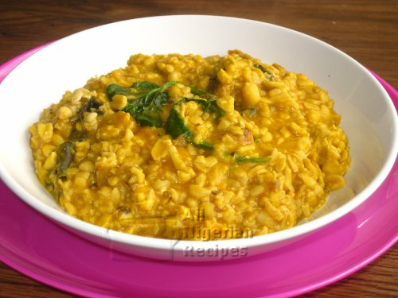

What is Ukwa
African breadfruit is in a food class of its own. I was not sure where to put it but finally settled for beans section because breadfruit seeds are most similar to beans. It is known as Ukwa in Igbo and the scientific name is Treculia africana.
Ingredients
- 700g African Breadfruit
- 2 medium dry fish
- 2 small stock cubes
- 7g edible potash
- Palm oil (enough to colour)
- 5-6 fresh bitter leaves
- Pepper & Salt (to taste)
Before you cook the Ukwa
- If using dry ukwa, soak it overnight in plenty of cold water. If using fresh ukwa, skip this step.
- The next day, soak, debone and wash the dry fish or stock fish and break into pieces.
- Wash the ukwa thoroughly in cold water. Stones and sand usually settle at the bottom so watch out for those.
- Pound the pepper.
- Rinse the bitter leaves and set aside.
- Note that you can also serve Ukwa with White Puna yam or sweet corn
Cooking Directions
- Put the thoroughly washed ukwa in a sizeable pot. I used a pressure pot in the video below because it cooks the ukwa much faster.
- Pour enough water to cover the ukwa. The level of water should be about 1 inch above the level of the ukwa.
- Add the edible potash. Add the dry fish or stock fish, cover the pot and cook till well done. The ukwa is done when the seeds melt when pressed. You may need to top up the water while cooking so watch it closely. If using a pressure pot, top ups will not be necessary.
- Add enough palm oil to the well done ukwa, add pepper, stock cubes and salt to taste.
- Stir. Cover and cook on medium heat till the palm oil changes colour from red to yellow. This should take about 5 minutes.
- Stir and add the bitter leaves.
- Cover and leave to simmer or till the leaves wilt but still green and the ukwa is ready to be served.
Return to top
Return to main page